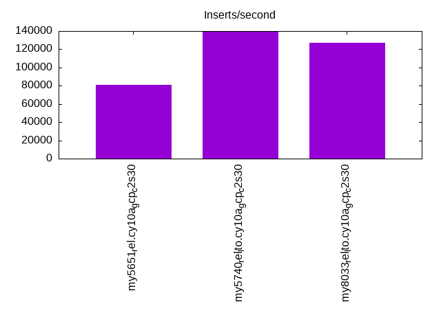

This is a report for the insert benchmark with 160M docs and 8 client(s). It is generated by scripts (bash, awk, sed) and Tufte might not be impressed. An overview of the insert benchmark is here and a short update is here. Below, by DBMS, I mean DBMS+version.config. An example is my8020.c10b40 where my means MySQL, 8020 is version 8.0.20 and c10b40 is the name for the configuration file.
The test server is a c2-standard-30 from GCP with 15 cores, hyperthreads disabled, 120G RAM, XFS + SW RAID 0 on 4 NVMe devices (1.5TB). The benchmark was run with 8 client and there were 1 or 3 connections per client (1 for queries or inserts without rate limits, 1+1 for rate limited inserts+deletes). There are 8 tables, client per table. It loads 160M rows without secondary indexes, creates secondary indexes, then inserts 800M rows with a delete per insert to avoid growing the table. It then does 3 read+write tests for 1800s each that do queries as fast as possible with 100, 500 and then 1000 inserts/second/client concurrent with the queries and 1000 deletes/second to avoid growing the table. The database is cached by InnoDB.
The tested DBMS are:
The numbers are inserts/s for l.i0 and l.i1, indexed docs (or rows) /s for l.x and queries/s for q*.2. The values are the average rate over the entire test for inserts (IPS) and queries (QPS). The range of values for IPS and QPS is split into 3 parts: bottom 25%, middle 50%, top 25%. Values in the bottom 25% have a red background, values in the top 25% have a green background and values in the middle have no color. A gray background is used for values that can be ignored because the DBMS did not sustain the target insert rate. Red backgrounds are not used when the minimum value is within 80% of the max value.
| dbms | l.i0 | l.x | l.i1 | q100.1 | q500.1 | q1000.1 |
|---|---|---|---|---|---|---|
| my5651_rel.cy10a_gcp_c2s30 | 433604 | 618147 | 81202 | 59927 | 64203 | 74452 |
| my5740_rel_lto.cy10a_gcp_c2s30 | 808081 | 1194776 | 139519 | 53059 | 56220 | 63902 |
| my8033_rel_lto.cy10a_gcp_c2s30 | 686695 | 865405 | 127024 | 44591 | 51950 | 54333 |
This table has relative throughput, throughput for the DBMS relative to the DBMS in the first line, using the absolute throughput from the previous table. Values less than 0.95 have a yellow background. Values greater than 1.05 have a blue background.
| dbms | l.i0 | l.x | l.i1 | q100.1 | q500.1 | q1000.1 |
|---|---|---|---|---|---|---|
| my5651_rel.cy10a_gcp_c2s30 | 1.00 | 1.00 | 1.00 | 1.00 | 1.00 | 1.00 |
| my5740_rel_lto.cy10a_gcp_c2s30 | 1.86 | 1.93 | 1.72 | 0.89 | 0.88 | 0.86 |
| my8033_rel_lto.cy10a_gcp_c2s30 | 1.58 | 1.40 | 1.56 | 0.74 | 0.81 | 0.73 |
This lists the average rate of inserts/s for the tests that do inserts concurrent with queries. For such tests the query rate is listed in the table above. The read+write tests are setup so that the insert rate should match the target rate every second. Cells that are not at least 95% of the target have a red background to indicate a failure to satisfy the target.
| dbms | q100.1 | q500.1 | q1000.1 |
|---|---|---|---|
| my5651_rel.cy10a_gcp_c2s30 | 783 | 3962 | 7960 |
| my5740_rel_lto.cy10a_gcp_c2s30 | 783 | 3967 | 7956 |
| my8033_rel_lto.cy10a_gcp_c2s30 | 794 | 3980 | 7960 |
| target | 800 | 4000 | 8000 |
l.i0: load without secondary indexes. Graphs for performance per 1-second interval are here.
Average throughput:
Insert response time histogram: each cell has the percentage of responses that take <= the time in the header and max is the max response time in seconds. For the max column values in the top 25% of the range have a red background and in the bottom 25% of the range have a green background. The red background is not used when the min value is within 80% of the max value.
| dbms | 256us | 1ms | 4ms | 16ms | 64ms | 256ms | 1s | 4s | 16s | gt | max |
|---|---|---|---|---|---|---|---|---|---|---|---|
| my5651_rel.cy10a_gcp_c2s30 | 2.235 | 97.528 | 0.066 | 0.156 | 0.014 | 0.240 | |||||
| my5740_rel_lto.cy10a_gcp_c2s30 | 97.481 | 2.458 | 0.033 | 0.012 | 0.015 | 0.238 | |||||
| my8033_rel_lto.cy10a_gcp_c2s30 | 30.288 | 69.638 | 0.033 | 0.026 | 0.014 | 0.253 |
Performance metrics for the DBMS listed above. Some are normalized by throughput, others are not. Legend for results is here.
ips qps rps rmbps wps wmbps rpq rkbpq wpi wkbpi csps cpups cspq cpupq dbgb1 dbgb2 rss maxop p50 p99 tag 433604 0 3422 13.4 627.6 79.4 0.008 0.032 0.001 0.188 88654 42.2 0.204 15 10.6 139.1 16.1 0.240 57038 42454 160m.my5651_rel.cy10a_gcp_c2s30 808081 0 0 0.0 1486.7 156.7 0.000 0.000 0.002 0.199 80587 69.7 0.100 13 10.6 139.1 17.2 0.238 112878 86207 160m.my5740_rel_lto.cy10a_gcp_c2s30 686695 0 0 0.0 1130.5 127.5 0.000 0.000 0.002 0.190 175781 72.6 0.256 16 10.6 139.1 17.3 0.253 93499 70524 160m.my8033_rel_lto.cy10a_gcp_c2s30
l.x: create secondary indexes.
Average throughput:
Performance metrics for the DBMS listed above. Some are normalized by throughput, others are not. Legend for results is here.
ips qps rps rmbps wps wmbps rpq rkbpq wpi wkbpi csps cpups cspq cpupq dbgb1 dbgb2 rss maxop p50 p99 tag 618147 0 310 1.2 7973.7 647.5 0.001 0.002 0.013 1.073 19056 37.5 0.031 9 21.7 150.2 27.4 0.001 NA NA 160m.my5651_rel.cy10a_gcp_c2s30 1194776 0 0 0.0 14503.2 1069.3 0.000 0.000 0.012 0.916 47853 35.9 0.040 5 23.6 152.1 28.6 0.030 NA NA 160m.my5740_rel_lto.cy10a_gcp_c2s30 865405 0 4333 275.4 17602.6 842.7 0.005 0.326 0.020 0.997 123381 81.7 0.143 14 23.5 152.1 27.0 0.015 NA NA 160m.my8033_rel_lto.cy10a_gcp_c2s30
l.i1: continue load after secondary indexes created. Graphs for performance per 1-second interval are here.
Average throughput:
Insert response time histogram: each cell has the percentage of responses that take <= the time in the header and max is the max response time in seconds. For the max column values in the top 25% of the range have a red background and in the bottom 25% of the range have a green background. The red background is not used when the min value is within 80% of the max value.
| dbms | 256us | 1ms | 4ms | 16ms | 64ms | 256ms | 1s | 4s | 16s | gt | max |
|---|---|---|---|---|---|---|---|---|---|---|---|
| my5651_rel.cy10a_gcp_c2s30 | nonzero | 29.748 | 69.655 | 0.578 | 0.019 | nonzero | 0.456 | ||||
| my5740_rel_lto.cy10a_gcp_c2s30 | 89.927 | 10.006 | 0.051 | 0.016 | nonzero | 0.492 | |||||
| my8033_rel_lto.cy10a_gcp_c2s30 | 86.480 | 13.402 | 0.098 | 0.020 | 0.001 | 0.396 |
Delete response time histogram: each cell has the percentage of responses that take <= the time in the header and max is the max response time in seconds. For the max column values in the top 25% of the range have a red background and in the bottom 25% of the range have a green background. The red background is not used when the min value is within 80% of the max value.
| dbms | 256us | 1ms | 4ms | 16ms | 64ms | 256ms | 1s | 4s | 16s | gt | max |
|---|---|---|---|---|---|---|---|---|---|---|---|
| my5651_rel.cy10a_gcp_c2s30 | 0.002 | 55.074 | 44.406 | 0.501 | 0.016 | 0.001 | 0.462 | ||||
| my5740_rel_lto.cy10a_gcp_c2s30 | nonzero | 88.750 | 11.177 | 0.056 | 0.016 | nonzero | 0.494 | ||||
| my8033_rel_lto.cy10a_gcp_c2s30 | 87.467 | 12.431 | 0.086 | 0.014 | 0.001 | 0.287 |
Performance metrics for the DBMS listed above. Some are normalized by throughput, others are not. Legend for results is here.
ips qps rps rmbps wps wmbps rpq rkbpq wpi wkbpi csps cpups cspq cpupq dbgb1 dbgb2 rss maxop p50 p99 tag 81202 0 2640 12.6 4393.5 167.4 0.033 0.159 0.054 2.111 171699 62.0 2.114 115 94.0 251.9 85.7 0.456 10389 6793 160m.my5651_rel.cy10a_gcp_c2s30 139519 0 293 4.6 7157.8 276.7 0.002 0.034 0.051 2.031 56189 87.2 0.403 94 93.7 251.4 86.9 0.492 17681 13633 160m.my5740_rel_lto.cy10a_gcp_c2s30 127024 0 309 4.8 7524.8 276.0 0.002 0.039 0.059 2.225 183257 85.4 1.443 101 72.9 220.1 86.9 0.396 16034 11987 160m.my8033_rel_lto.cy10a_gcp_c2s30
q100.1: range queries with 100 insert/s per client. Graphs for performance per 1-second interval are here.
Average throughput:
Query response time histogram: each cell has the percentage of responses that take <= the time in the header and max is the max response time in seconds. For max values in the top 25% of the range have a red background and in the bottom 25% of the range have a green background. The red background is not used when the min value is within 80% of the max value.
| dbms | 256us | 1ms | 4ms | 16ms | 64ms | 256ms | 1s | 4s | 16s | gt | max |
|---|---|---|---|---|---|---|---|---|---|---|---|
| my5651_rel.cy10a_gcp_c2s30 | 99.706 | 0.234 | 0.056 | 0.005 | nonzero | nonzero | 0.084 | ||||
| my5740_rel_lto.cy10a_gcp_c2s30 | 99.614 | 0.376 | 0.009 | nonzero | nonzero | nonzero | 0.083 | ||||
| my8033_rel_lto.cy10a_gcp_c2s30 | 98.885 | 1.110 | 0.005 | nonzero | nonzero | 0.025 |
Insert response time histogram: each cell has the percentage of responses that take <= the time in the header and max is the max response time in seconds. For max values in the top 25% of the range have a red background and in the bottom 25% of the range have a green background. The red background is not used when the min value is within 80% of the max value.
| dbms | 256us | 1ms | 4ms | 16ms | 64ms | 256ms | 1s | 4s | 16s | gt | max |
|---|---|---|---|---|---|---|---|---|---|---|---|
| my5651_rel.cy10a_gcp_c2s30 | 87.983 | 11.920 | 0.097 | 0.037 | |||||||
| my5740_rel_lto.cy10a_gcp_c2s30 | 94.542 | 5.406 | 0.052 | 0.026 | |||||||
| my8033_rel_lto.cy10a_gcp_c2s30 | 97.962 | 2.028 | 0.010 | 0.025 |
Delete response time histogram: each cell has the percentage of responses that take <= the time in the header and max is the max response time in seconds. For max values in the top 25% of the range have a red background and in the bottom 25% of the range have a green background. The red background is not used when the min value is within 80% of the max value.
| dbms | 256us | 1ms | 4ms | 16ms | 64ms | 256ms | 1s | 4s | 16s | gt | max |
|---|---|---|---|---|---|---|---|---|---|---|---|
| my5651_rel.cy10a_gcp_c2s30 | 0.205 | 90.292 | 9.410 | 0.094 | 0.036 | ||||||
| my5740_rel_lto.cy10a_gcp_c2s30 | 95.677 | 4.274 | 0.049 | 0.047 | |||||||
| my8033_rel_lto.cy10a_gcp_c2s30 | 98.031 | 1.969 | 0.015 |
Performance metrics for the DBMS listed above. Some are normalized by throughput, others are not. Legend for results is here.
ips qps rps rmbps wps wmbps rpq rkbpq wpi wkbpi csps cpups cspq cpupq dbgb1 dbgb2 rss maxop p50 p99 tag 783 59927 1728 26.6 3748.0 116.8 0.029 0.454 4.789 152.802 209424 69.1 3.495 173 94.0 251.9 85.7 0.084 7672 7339 160m.my5651_rel.cy10a_gcp_c2s30 783 53059 1527 23.9 3558.4 108.9 0.029 0.460 4.545 142.467 181462 71.5 3.420 202 93.7 251.4 86.9 0.083 6777 6507 160m.my5740_rel_lto.cy10a_gcp_c2s30 794 44591 653 10.2 3914.9 118.8 0.015 0.234 4.929 153.226 162889 71.9 3.653 242 72.9 220.2 86.9 0.025 5579 5340 160m.my8033_rel_lto.cy10a_gcp_c2s30
q500.1: range queries with 500 insert/s per client. Graphs for performance per 1-second interval are here.
Average throughput:
Query response time histogram: each cell has the percentage of responses that take <= the time in the header and max is the max response time in seconds. For max values in the top 25% of the range have a red background and in the bottom 25% of the range have a green background. The red background is not used when the min value is within 80% of the max value.
| dbms | 256us | 1ms | 4ms | 16ms | 64ms | 256ms | 1s | 4s | 16s | gt | max |
|---|---|---|---|---|---|---|---|---|---|---|---|
| my5651_rel.cy10a_gcp_c2s30 | 99.626 | 0.294 | 0.073 | 0.008 | nonzero | nonzero | 0.078 | ||||
| my5740_rel_lto.cy10a_gcp_c2s30 | 99.701 | 0.284 | 0.014 | 0.001 | nonzero | nonzero | 0.108 | ||||
| my8033_rel_lto.cy10a_gcp_c2s30 | 99.494 | 0.483 | 0.021 | 0.002 | nonzero | 0.026 |
Insert response time histogram: each cell has the percentage of responses that take <= the time in the header and max is the max response time in seconds. For max values in the top 25% of the range have a red background and in the bottom 25% of the range have a green background. The red background is not used when the min value is within 80% of the max value.
| dbms | 256us | 1ms | 4ms | 16ms | 64ms | 256ms | 1s | 4s | 16s | gt | max |
|---|---|---|---|---|---|---|---|---|---|---|---|
| my5651_rel.cy10a_gcp_c2s30 | 0.026 | 96.237 | 3.662 | 0.074 | 0.058 | ||||||
| my5740_rel_lto.cy10a_gcp_c2s30 | 95.542 | 4.438 | 0.020 | 0.030 | |||||||
| my8033_rel_lto.cy10a_gcp_c2s30 | 74.484 | 24.806 | 0.710 | 0.039 |
Delete response time histogram: each cell has the percentage of responses that take <= the time in the header and max is the max response time in seconds. For max values in the top 25% of the range have a red background and in the bottom 25% of the range have a green background. The red background is not used when the min value is within 80% of the max value.
| dbms | 256us | 1ms | 4ms | 16ms | 64ms | 256ms | 1s | 4s | 16s | gt | max |
|---|---|---|---|---|---|---|---|---|---|---|---|
| my5651_rel.cy10a_gcp_c2s30 | 0.751 | 96.558 | 2.624 | 0.067 | 0.054 | ||||||
| my5740_rel_lto.cy10a_gcp_c2s30 | 0.054 | 97.059 | 2.872 | 0.015 | 0.048 | ||||||
| my8033_rel_lto.cy10a_gcp_c2s30 | 80.290 | 19.254 | 0.456 | 0.035 |
Performance metrics for the DBMS listed above. Some are normalized by throughput, others are not. Legend for results is here.
ips qps rps rmbps wps wmbps rpq rkbpq wpi wkbpi csps cpups cspq cpupq dbgb1 dbgb2 rss maxop p50 p99 tag 3962 64203 1070 15.1 3703.6 122.9 0.017 0.241 0.935 31.753 220353 69.2 3.432 162 94.0 251.9 85.7 0.078 8007 7384 160m.my5651_rel.cy10a_gcp_c2s30 3967 56220 999 15.6 3949.9 130.7 0.018 0.284 0.996 33.737 178196 74.2 3.170 198 93.7 251.4 86.9 0.108 7080 6651 160m.my5740_rel_lto.cy10a_gcp_c2s30 3980 51950 28 0.4 1789.5 54.5 0.001 0.009 0.450 14.017 200223 61.1 3.854 176 72.9 201.6 86.9 0.026 6920 5451 160m.my8033_rel_lto.cy10a_gcp_c2s30
q1000.1: range queries with 1000 insert/s per client. Graphs for performance per 1-second interval are here.
Average throughput:
Query response time histogram: each cell has the percentage of responses that take <= the time in the header and max is the max response time in seconds. For max values in the top 25% of the range have a red background and in the bottom 25% of the range have a green background. The red background is not used when the min value is within 80% of the max value.
| dbms | 256us | 1ms | 4ms | 16ms | 64ms | 256ms | 1s | 4s | 16s | gt | max |
|---|---|---|---|---|---|---|---|---|---|---|---|
| my5651_rel.cy10a_gcp_c2s30 | 99.508 | 0.441 | 0.046 | 0.004 | nonzero | 0.031 | |||||
| my5740_rel_lto.cy10a_gcp_c2s30 | 99.797 | 0.180 | 0.019 | 0.003 | nonzero | 0.025 | |||||
| my8033_rel_lto.cy10a_gcp_c2s30 | 99.629 | 0.317 | 0.048 | 0.005 | nonzero | 0.044 |
Insert response time histogram: each cell has the percentage of responses that take <= the time in the header and max is the max response time in seconds. For max values in the top 25% of the range have a red background and in the bottom 25% of the range have a green background. The red background is not used when the min value is within 80% of the max value.
| dbms | 256us | 1ms | 4ms | 16ms | 64ms | 256ms | 1s | 4s | 16s | gt | max |
|---|---|---|---|---|---|---|---|---|---|---|---|
| my5651_rel.cy10a_gcp_c2s30 | 0.001 | 46.743 | 52.613 | 0.643 | 0.034 | ||||||
| my5740_rel_lto.cy10a_gcp_c2s30 | 95.443 | 4.494 | 0.064 | 0.029 | |||||||
| my8033_rel_lto.cy10a_gcp_c2s30 | 72.777 | 26.270 | 0.953 | 0.043 |
Delete response time histogram: each cell has the percentage of responses that take <= the time in the header and max is the max response time in seconds. For max values in the top 25% of the range have a red background and in the bottom 25% of the range have a green background. The red background is not used when the min value is within 80% of the max value.
| dbms | 256us | 1ms | 4ms | 16ms | 64ms | 256ms | 1s | 4s | 16s | gt | max |
|---|---|---|---|---|---|---|---|---|---|---|---|
| my5651_rel.cy10a_gcp_c2s30 | 0.022 | 54.626 | 44.981 | 0.372 | 0.033 | ||||||
| my5740_rel_lto.cy10a_gcp_c2s30 | 0.077 | 96.115 | 3.753 | 0.054 | 0.031 | ||||||
| my8033_rel_lto.cy10a_gcp_c2s30 | 78.028 | 21.264 | 0.709 | 0.049 |
Performance metrics for the DBMS listed above. Some are normalized by throughput, others are not. Legend for results is here.
ips qps rps rmbps wps wmbps rpq rkbpq wpi wkbpi csps cpups cspq cpupq dbgb1 dbgb2 rss maxop p50 p99 tag 7960 74452 334 2.5 1410.6 45.8 0.004 0.035 0.177 5.889 285371 57.3 3.833 115 94.0 251.9 85.7 0.031 9366 9030 160m.my5651_rel.cy10a_gcp_c2s30 7956 63902 131 2.0 1786.9 58.7 0.002 0.033 0.225 7.557 236311 62.1 3.698 146 93.7 251.4 86.9 0.025 8311 6747 160m.my5740_rel_lto.cy10a_gcp_c2s30 7960 54333 48 0.8 874.7 28.4 0.001 0.014 0.110 3.651 207556 58.1 3.820 160 72.9 201.6 86.9 0.044 6811 6675 160m.my8033_rel_lto.cy10a_gcp_c2s30
l.i0: load without secondary indexes
Performance metrics for all DBMS, not just the ones listed above. Some are normalized by throughput, others are not. Legend for results is here.
ips qps rps rmbps wps wmbps rpq rkbpq wpi wkbpi csps cpups cspq cpupq dbgb1 dbgb2 rss maxop p50 p99 tag 433604 0 3422 13.4 627.6 79.4 0.008 0.032 0.001 0.188 88654 42.2 0.204 15 10.6 139.1 16.1 0.240 57038 42454 160m.my5651_rel.cy10a_gcp_c2s30 808081 0 0 0.0 1486.7 156.7 0.000 0.000 0.002 0.199 80587 69.7 0.100 13 10.6 139.1 17.2 0.238 112878 86207 160m.my5740_rel_lto.cy10a_gcp_c2s30 686695 0 0 0.0 1130.5 127.5 0.000 0.000 0.002 0.190 175781 72.6 0.256 16 10.6 139.1 17.3 0.253 93499 70524 160m.my8033_rel_lto.cy10a_gcp_c2s30
l.x: create secondary indexes
Performance metrics for all DBMS, not just the ones listed above. Some are normalized by throughput, others are not. Legend for results is here.
ips qps rps rmbps wps wmbps rpq rkbpq wpi wkbpi csps cpups cspq cpupq dbgb1 dbgb2 rss maxop p50 p99 tag 618147 0 310 1.2 7973.7 647.5 0.001 0.002 0.013 1.073 19056 37.5 0.031 9 21.7 150.2 27.4 0.001 NA NA 160m.my5651_rel.cy10a_gcp_c2s30 1194776 0 0 0.0 14503.2 1069.3 0.000 0.000 0.012 0.916 47853 35.9 0.040 5 23.6 152.1 28.6 0.030 NA NA 160m.my5740_rel_lto.cy10a_gcp_c2s30 865405 0 4333 275.4 17602.6 842.7 0.005 0.326 0.020 0.997 123381 81.7 0.143 14 23.5 152.1 27.0 0.015 NA NA 160m.my8033_rel_lto.cy10a_gcp_c2s30
l.i1: continue load after secondary indexes created
Performance metrics for all DBMS, not just the ones listed above. Some are normalized by throughput, others are not. Legend for results is here.
ips qps rps rmbps wps wmbps rpq rkbpq wpi wkbpi csps cpups cspq cpupq dbgb1 dbgb2 rss maxop p50 p99 tag 81202 0 2640 12.6 4393.5 167.4 0.033 0.159 0.054 2.111 171699 62.0 2.114 115 94.0 251.9 85.7 0.456 10389 6793 160m.my5651_rel.cy10a_gcp_c2s30 139519 0 293 4.6 7157.8 276.7 0.002 0.034 0.051 2.031 56189 87.2 0.403 94 93.7 251.4 86.9 0.492 17681 13633 160m.my5740_rel_lto.cy10a_gcp_c2s30 127024 0 309 4.8 7524.8 276.0 0.002 0.039 0.059 2.225 183257 85.4 1.443 101 72.9 220.1 86.9 0.396 16034 11987 160m.my8033_rel_lto.cy10a_gcp_c2s30
q100.1: range queries with 100 insert/s per client
Performance metrics for all DBMS, not just the ones listed above. Some are normalized by throughput, others are not. Legend for results is here.
ips qps rps rmbps wps wmbps rpq rkbpq wpi wkbpi csps cpups cspq cpupq dbgb1 dbgb2 rss maxop p50 p99 tag 783 59927 1728 26.6 3748.0 116.8 0.029 0.454 4.789 152.802 209424 69.1 3.495 173 94.0 251.9 85.7 0.084 7672 7339 160m.my5651_rel.cy10a_gcp_c2s30 783 53059 1527 23.9 3558.4 108.9 0.029 0.460 4.545 142.467 181462 71.5 3.420 202 93.7 251.4 86.9 0.083 6777 6507 160m.my5740_rel_lto.cy10a_gcp_c2s30 794 44591 653 10.2 3914.9 118.8 0.015 0.234 4.929 153.226 162889 71.9 3.653 242 72.9 220.2 86.9 0.025 5579 5340 160m.my8033_rel_lto.cy10a_gcp_c2s30
q500.1: range queries with 500 insert/s per client
Performance metrics for all DBMS, not just the ones listed above. Some are normalized by throughput, others are not. Legend for results is here.
ips qps rps rmbps wps wmbps rpq rkbpq wpi wkbpi csps cpups cspq cpupq dbgb1 dbgb2 rss maxop p50 p99 tag 3962 64203 1070 15.1 3703.6 122.9 0.017 0.241 0.935 31.753 220353 69.2 3.432 162 94.0 251.9 85.7 0.078 8007 7384 160m.my5651_rel.cy10a_gcp_c2s30 3967 56220 999 15.6 3949.9 130.7 0.018 0.284 0.996 33.737 178196 74.2 3.170 198 93.7 251.4 86.9 0.108 7080 6651 160m.my5740_rel_lto.cy10a_gcp_c2s30 3980 51950 28 0.4 1789.5 54.5 0.001 0.009 0.450 14.017 200223 61.1 3.854 176 72.9 201.6 86.9 0.026 6920 5451 160m.my8033_rel_lto.cy10a_gcp_c2s30
q1000.1: range queries with 1000 insert/s per client
Performance metrics for all DBMS, not just the ones listed above. Some are normalized by throughput, others are not. Legend for results is here.
ips qps rps rmbps wps wmbps rpq rkbpq wpi wkbpi csps cpups cspq cpupq dbgb1 dbgb2 rss maxop p50 p99 tag 7960 74452 334 2.5 1410.6 45.8 0.004 0.035 0.177 5.889 285371 57.3 3.833 115 94.0 251.9 85.7 0.031 9366 9030 160m.my5651_rel.cy10a_gcp_c2s30 7956 63902 131 2.0 1786.9 58.7 0.002 0.033 0.225 7.557 236311 62.1 3.698 146 93.7 251.4 86.9 0.025 8311 6747 160m.my5740_rel_lto.cy10a_gcp_c2s30 7960 54333 48 0.8 874.7 28.4 0.001 0.014 0.110 3.651 207556 58.1 3.820 160 72.9 201.6 86.9 0.044 6811 6675 160m.my8033_rel_lto.cy10a_gcp_c2s30
Insert response time histogram
256us 1ms 4ms 16ms 64ms 256ms 1s 4s 16s gt max tag 0.000 2.235 97.528 0.066 0.156 0.014 0.000 0.000 0.000 0.000 0.240 my5651_rel.cy10a_gcp_c2s30 0.000 97.481 2.458 0.033 0.012 0.015 0.000 0.000 0.000 0.000 0.238 my5740_rel_lto.cy10a_gcp_c2s30 0.000 30.288 69.638 0.033 0.026 0.014 0.000 0.000 0.000 0.000 0.253 my8033_rel_lto.cy10a_gcp_c2s30
TODO - determine whether there is data for create index response time
Insert response time histogram
256us 1ms 4ms 16ms 64ms 256ms 1s 4s 16s gt max tag 0.000 nonzero 29.748 69.655 0.578 0.019 nonzero 0.000 0.000 0.000 0.456 my5651_rel.cy10a_gcp_c2s30 0.000 0.000 89.927 10.006 0.051 0.016 nonzero 0.000 0.000 0.000 0.492 my5740_rel_lto.cy10a_gcp_c2s30 0.000 0.000 86.480 13.402 0.098 0.020 0.001 0.000 0.000 0.000 0.396 my8033_rel_lto.cy10a_gcp_c2s30
Delete response time histogram
256us 1ms 4ms 16ms 64ms 256ms 1s 4s 16s gt max tag 0.000 0.002 55.074 44.406 0.501 0.016 0.001 0.000 0.000 0.000 0.462 my5651_rel.cy10a_gcp_c2s30 0.000 nonzero 88.750 11.177 0.056 0.016 nonzero 0.000 0.000 0.000 0.494 my5740_rel_lto.cy10a_gcp_c2s30 0.000 0.000 87.467 12.431 0.086 0.014 0.001 0.000 0.000 0.000 0.287 my8033_rel_lto.cy10a_gcp_c2s30
Query response time histogram
256us 1ms 4ms 16ms 64ms 256ms 1s 4s 16s gt max tag 99.706 0.234 0.056 0.005 nonzero nonzero 0.000 0.000 0.000 0.000 0.084 my5651_rel.cy10a_gcp_c2s30 99.614 0.376 0.009 nonzero nonzero nonzero 0.000 0.000 0.000 0.000 0.083 my5740_rel_lto.cy10a_gcp_c2s30 98.885 1.110 0.005 nonzero nonzero 0.000 0.000 0.000 0.000 0.000 0.025 my8033_rel_lto.cy10a_gcp_c2s30
Insert response time histogram
256us 1ms 4ms 16ms 64ms 256ms 1s 4s 16s gt max tag 0.000 0.000 87.983 11.920 0.097 0.000 0.000 0.000 0.000 0.000 0.037 my5651_rel.cy10a_gcp_c2s30 0.000 0.000 94.542 5.406 0.052 0.000 0.000 0.000 0.000 0.000 0.026 my5740_rel_lto.cy10a_gcp_c2s30 0.000 0.000 97.962 2.028 0.010 0.000 0.000 0.000 0.000 0.000 0.025 my8033_rel_lto.cy10a_gcp_c2s30
Delete response time histogram
256us 1ms 4ms 16ms 64ms 256ms 1s 4s 16s gt max tag 0.000 0.205 90.292 9.410 0.094 0.000 0.000 0.000 0.000 0.000 0.036 my5651_rel.cy10a_gcp_c2s30 0.000 0.000 95.677 4.274 0.049 0.000 0.000 0.000 0.000 0.000 0.047 my5740_rel_lto.cy10a_gcp_c2s30 0.000 0.000 98.031 1.969 0.000 0.000 0.000 0.000 0.000 0.000 0.015 my8033_rel_lto.cy10a_gcp_c2s30
Query response time histogram
256us 1ms 4ms 16ms 64ms 256ms 1s 4s 16s gt max tag 99.626 0.294 0.073 0.008 nonzero nonzero 0.000 0.000 0.000 0.000 0.078 my5651_rel.cy10a_gcp_c2s30 99.701 0.284 0.014 0.001 nonzero nonzero 0.000 0.000 0.000 0.000 0.108 my5740_rel_lto.cy10a_gcp_c2s30 99.494 0.483 0.021 0.002 nonzero 0.000 0.000 0.000 0.000 0.000 0.026 my8033_rel_lto.cy10a_gcp_c2s30
Insert response time histogram
256us 1ms 4ms 16ms 64ms 256ms 1s 4s 16s gt max tag 0.000 0.026 96.237 3.662 0.074 0.000 0.000 0.000 0.000 0.000 0.058 my5651_rel.cy10a_gcp_c2s30 0.000 0.000 95.542 4.438 0.020 0.000 0.000 0.000 0.000 0.000 0.030 my5740_rel_lto.cy10a_gcp_c2s30 0.000 0.000 74.484 24.806 0.710 0.000 0.000 0.000 0.000 0.000 0.039 my8033_rel_lto.cy10a_gcp_c2s30
Delete response time histogram
256us 1ms 4ms 16ms 64ms 256ms 1s 4s 16s gt max tag 0.000 0.751 96.558 2.624 0.067 0.000 0.000 0.000 0.000 0.000 0.054 my5651_rel.cy10a_gcp_c2s30 0.000 0.054 97.059 2.872 0.015 0.000 0.000 0.000 0.000 0.000 0.048 my5740_rel_lto.cy10a_gcp_c2s30 0.000 0.000 80.290 19.254 0.456 0.000 0.000 0.000 0.000 0.000 0.035 my8033_rel_lto.cy10a_gcp_c2s30
Query response time histogram
256us 1ms 4ms 16ms 64ms 256ms 1s 4s 16s gt max tag 99.508 0.441 0.046 0.004 nonzero 0.000 0.000 0.000 0.000 0.000 0.031 my5651_rel.cy10a_gcp_c2s30 99.797 0.180 0.019 0.003 nonzero 0.000 0.000 0.000 0.000 0.000 0.025 my5740_rel_lto.cy10a_gcp_c2s30 99.629 0.317 0.048 0.005 nonzero 0.000 0.000 0.000 0.000 0.000 0.044 my8033_rel_lto.cy10a_gcp_c2s30
Insert response time histogram
256us 1ms 4ms 16ms 64ms 256ms 1s 4s 16s gt max tag 0.000 0.001 46.743 52.613 0.643 0.000 0.000 0.000 0.000 0.000 0.034 my5651_rel.cy10a_gcp_c2s30 0.000 0.000 95.443 4.494 0.064 0.000 0.000 0.000 0.000 0.000 0.029 my5740_rel_lto.cy10a_gcp_c2s30 0.000 0.000 72.777 26.270 0.953 0.000 0.000 0.000 0.000 0.000 0.043 my8033_rel_lto.cy10a_gcp_c2s30
Delete response time histogram
256us 1ms 4ms 16ms 64ms 256ms 1s 4s 16s gt max tag 0.000 0.022 54.626 44.981 0.372 0.000 0.000 0.000 0.000 0.000 0.033 my5651_rel.cy10a_gcp_c2s30 0.000 0.077 96.115 3.753 0.054 0.000 0.000 0.000 0.000 0.000 0.031 my5740_rel_lto.cy10a_gcp_c2s30 0.000 0.000 78.028 21.264 0.709 0.000 0.000 0.000 0.000 0.000 0.049 my8033_rel_lto.cy10a_gcp_c2s30